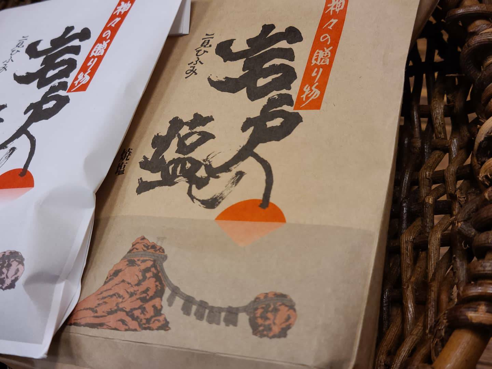

3話
2話
誕生のきっかけ
数々の商品に出会うまで
HARUからでお取り扱いしている商品は、“おかあさんが家族の為に集めたもの”が大きな柱となっています。
店長である母は、十数年前までは体が弱く、病院にお世話になる事が多々ありました。当時は、現在のように食生活についての知識が浅かった為、日々の仕事量と健康バランスが整わず、体が悲鳴をあげていたのかもしれません。治療にあたって、様々な医療を経験しながら自分の体の声に耳を傾けていくうちに、日々の暮らしが健康を作り上げていることに、ふと気が付きます。
—肌に触れるものは心地の良いものか。いま食べたものは体が喜んでいるか—
“家族には自分と同じ辛い想いをさせたくない。”という想いから、それらを１つ１つ丁寧に見直し、納得のいくものを時間を掛けて探していきました。
伝えていきたい暮らしの知恵
台所にあるものをゆっくりと見渡してみると、意外にも、体に関する悩みの答えがすぐそばで見つかることがあります。「身土不二」や「地産地消」という言葉があるように、古くから大切にされてきた身近な食べ物は私たちの体を支えてくれる大切な存在です。
我が家では、体の不調やケガなどは基本的に母にお任せします。食事や健康・自然療法など何十年にも渡って勉強してきた母のお手当は、時間をかけてゆっくりと、確実なものです。しかも、使うものは「梅干・しょうが・キャベツ・ネギ・里芋」など冷蔵庫に普段入っていそうなものばかり。
幼い頃、しょっちゅう熱を出していた娘は、母のお手当に初めは本当に驚きました。湿布を貼ってくれるかと思いきや、頭にキャベツを被せられたり、里芋を練ったものがガーゼにくるまれておでこに貼られたり、起こされて熱い生姜の足湯をしたり。一体何が起こっているのかと。
そんなことを何度か繰り返していくうちに、以前との大きな違いに気が付きます。
薬用湿布を使用している時よりも、熱が引いたあとの頭痛に悩まされることもなく、長時間寝込んでも、体のダルさが辛くなく、スッと体が軽くなっていくような。 強制的に治されるのではなく、自分の体が病気と闘ってくれているような感覚に凄く嬉しさを感じました。
商品と一緒にお渡ししたいもの
商品１つ１つに込められた生産者の方々の想いや努力の数々。体や環境に負荷をかけない天然素材のやさしさ。お手当方や自然療法に活用できる可能性の広さ。食や自然の尊さ。 これまでに出逢った商品には、言葉では説明しきれないほどの魅力がたくさん詰まっています。
—家族の健康や暮らしを支えてくれたモノや知恵を、もっとたくさんの方々に知っていただきたい。伝えていきたい。—
この想いがきっかけとなり、今のHARUからが誕生しました。
商品に込められた想いや魅力を通じて、モノがただのモノでは無くなる温かな瞬間を、是非、皆さまと一緒に共有させてください。